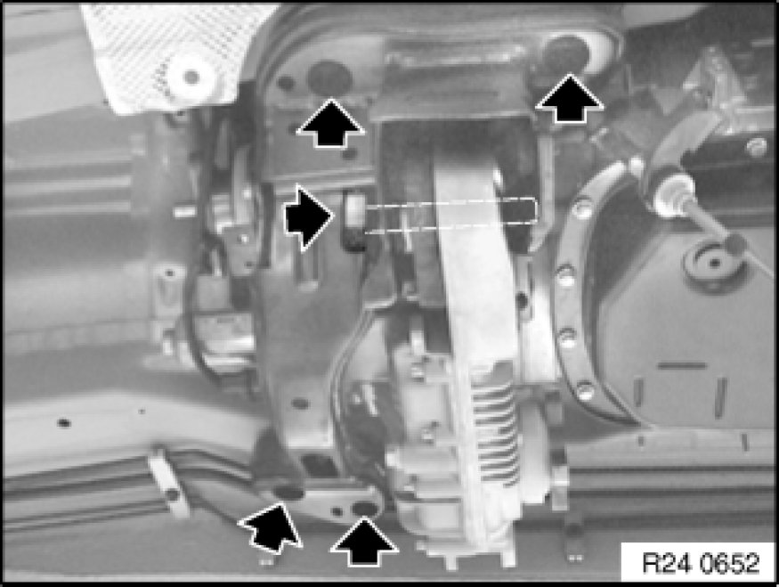

Removing And Installing Transfer Case (ATC 400 X-Drive)
27 10 010 - Removing and installing transfer case (ATC 400 X-Drive)

Special tools required:
- 00 2 030 00 2 030 Universal Hydro-Lifter Basic Unit
- 23 4 050 23 4 050 Universal Transmission Bracket

Important!
After replacement, the "Repair" service function must be carried out with GT1.

Important!
After completing work, check gear oil level and top up if necessary.
Filler plug (1):
Tightening torque 27 00 11AZ [1][2]Mechanical Specifications.
Gear oil level up to filler edge of filler plug (1).
Use only the approved gear oil.
Failure to comply with this requirement will result in serious damage to the transfer box!

Necessary preliminary tasks:
- Remove complete exhaust system Service and Repair.
- Remove heat shield.
Release screws.
Tightening torque 26 11 9AZ [1][2]Drive/Propeller Shaft.
Remove front propeller shaft at output flange of transfer case and tie to one side.
- Remove propeller shaft from transmission.
- Release center bearing.
- Tie propeller shaft to one side.
Tasks are described in Removing propeller shaft Removing and Installing Propeller Shaft (Cardan Universal Joint) Completely.

Supporting transmission:
Support transmission with special tools 23 4 050 23 4 050 Universal Transmission Bracket, 00 2 030 00 2 030 Universal Hydro-Lifter Basic Unit.
Secure transmission to mounting with tensioning strap (1).
Tasks are described in Transmission bracket Universal BMW Transmission Take-Up.
After completion of work, check transmission oil level.

Unfasten screws and remove transmission cross-member.
Tightening torque 27 00 10AZ [1][2]Mechanical Specifications.

Detach plugs (1) and (2) from servomotor.
Release screw connection of transfer case.
Tightening torque 27 00 9AZ [1][2]Mechanical Specifications.
Remove transfer case.
Installation Note:
Pay attention to dowel pin (1).
Grease dowel pin (1).
Apply a thin coat of grease to splines.
Grease: WEICON ANTI-SEIZE.